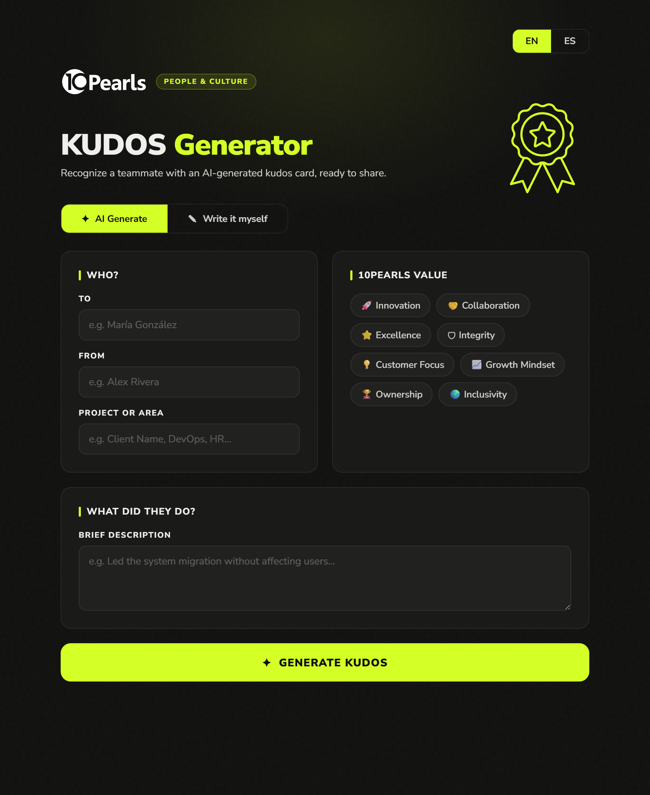
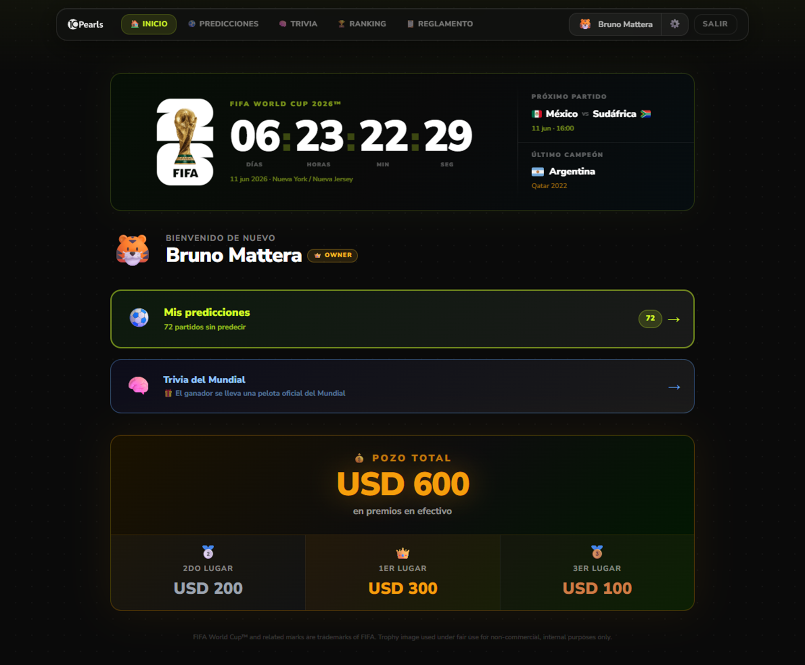

Internal products for Marketing & Communication
Two products designed and built end to end for an 800-person global tech company: KUDOS Generator, an AI assistant that turns generic shoutouts into real recognition, and the 10Pearls World Cup Pool, a multi-language prediction game for the FIFA World Cup 2026. Both built to remove the friction that was killing internal engagement.


I led both products end to end — strategy, UX, UI, and the full build. From the relaunch decks for KUDOS to deploying the 10Pearls World Cup Pool on Vercel, this was a one-designer-one-builder operation.
10Pearls is a global tech company with more than 800 people across 5+ countries. Its Marketing & Communication team isn't just designing posts and onboarding decks — it's the team in charge of how the company actually feels to work at. When they came to me, two cultural rituals needed help: peer recognition, which had become a chore people skipped, and company-wide events, which kept losing energy edition after edition. We didn't relaunch programs. We built products.
Recognition was treated as a task: late, generic, low emotional impact. Company-wide moments (World Cup, year-end, etc.) lost engagement year over year because participation required too many steps. The diagnosis wasn't the people — it was the design of the rituals. Both needed to stop being programs and start being products.
Two products with the same philosophy: make the right thing the easy thing. KUDOS Generator removed the blank-page problem of writing recognition: pick who, what they did, the tone, and AI drafts a specific, well-written kudo in seconds. 10Pearls World Cup Pool turned the World Cup into the company's group chat — multilingual auth, predictions, leaderboard, all built to give every employee a reason to show up daily for a month and a half.
A global digital product company headquartered in the US, with engineering and design hubs across Latin America, Asia and Europe.
10Pearls builds digital products for enterprise clients across healthcare, finance, education and consumer tech. With distributed teams in Colombia, Costa Rica, Pakistan, the US and Uruguay, internal culture isn't a side project — it's what holds the company together across timezones.
The Marketing & Communication function owns the rituals that make this distributed company feel like one. When the existing tools weren't doing the job, the team decided to design and build their own instead of buying off-the-shelf.
An AI assistant for peer recognition. Pick who, what they did, the tone — get a real, specific kudo in seconds. The blank-page problem, solved.
"Recognition isn't administered, it's designed."
From the relaunch strategy deck
Three short fields and three tone pills. No login, no setup. Open the link, write your kudo in 30 seconds, send.
The generator doesn't write FOR you — it expands what you wrote into clear, specific recognition. Three tone presets (sincere, funny, formal) keep it on-brand without sounding like AI.
Output ready to paste into Microsoft Teams channels, with optional emoji and formatting. The tool meets the ritual where it already lives.
Spanish, English and Portuguese, matched to the company's three main languages. Switch with one click.
A full prediction game built for the FIFA World Cup 2026. Every employee, three languages, one running leaderboard. Built solo on Next.js + Supabase, deployed on Vercel.
If the friction is zero and the social loop is real, people will show up daily.
Designing for distributed play
Email magic links, language pick, country, department, avatar. Two screens to play, persistent across devices.
Per-match score predictions, plus tournament-wide picks (top scorer, top goalkeeper). Points awarded by accuracy, recalculated as results come in.
Real-time standings filtered by country, department or all-company. Bragging rights with receipts.
i18n in Spanish, English and Portuguese, with locale-aware date formatting, country flags and right-locale defaults for each region.
Both products followed the same four-step rhythm — designed to ship fast, with the strategy deck and the live app written by the same person, in the same week.
Why is engagement dropping? What's the friction? In KUDOS it was the blank page. In 10Pearls World Cup Pool it was the lack of a single place to play.
A short, opinionated deck framing the problem and the principles (Immediacy · Zero Friction · Visibility · Modeling). Used to align stakeholders before any pixel.
UX, UI, copy, and code happened in parallel. Solo, in Figma and the IDE with Claude Code as a pair — decisions made in minutes instead of weeks.
Deployed and tested live with real teammates. Small adjustments based on usage in the first week, then handed off to Marketing & Comm for ongoing operation.
Owning the strategy, the design and the build changes how you make decisions. Some patterns from this project I'm taking everywhere now.
The moment you stop calling it a "program" and start treating it as a product, the standards change. You ship something usable, not something to be managed.
Doing both yourself collapses weeks of back-and-forth into hours. I paired with Claude Code throughout — for boilerplate, refactors, i18n strings, Supabase schemas — which let me move at the speed of decisions instead of typing.
For KUDOS, AI wasn't the headline — friction removal was. AI is the tool that makes the headline possible, not the headline itself.
KUDOS lives in Teams. 10Pearls World Cup Pool lives on a URL people can open from any device, with magic-link auth. The product meets the user — never the other way around.